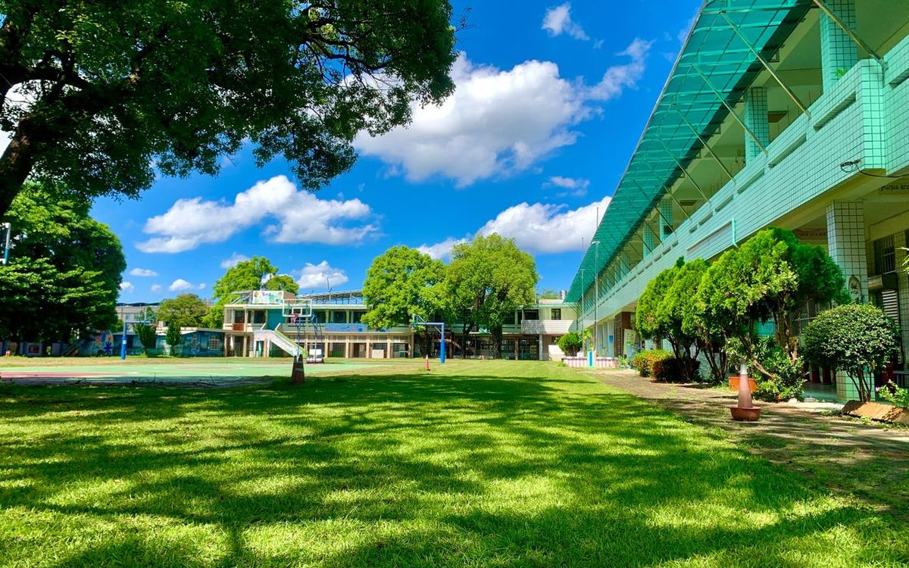
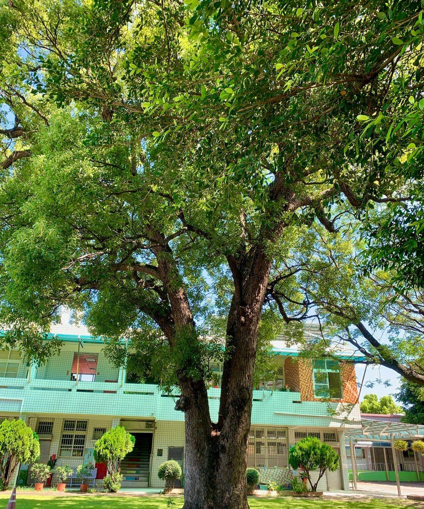
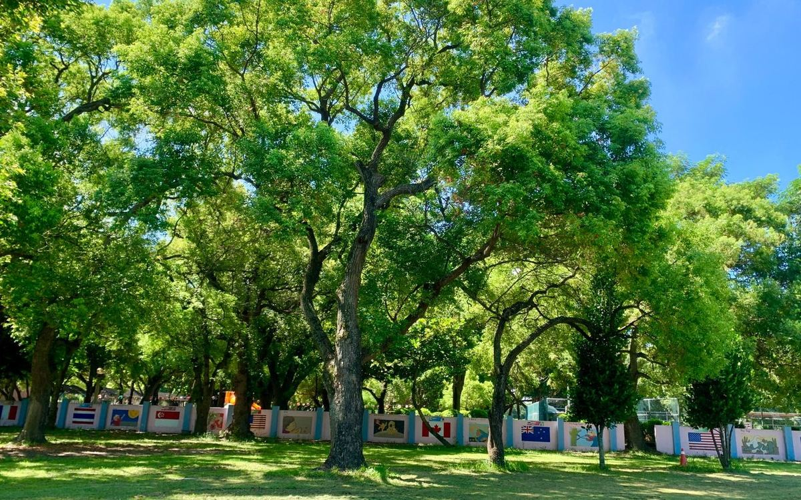
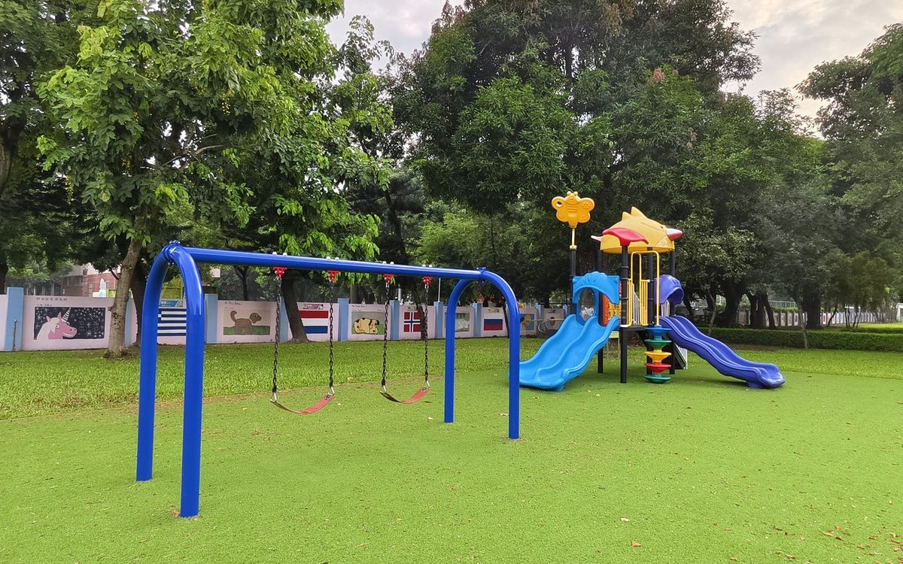

寬榕
Kuanrong
Japanese Era
日治時期
🌿 Still standing · 仍守在校門
The eldest of the three — planted by Japanese hands, named for the hope of wide-hearted tolerance.
三棵中最年長者——日本人手植，命名取「寬容」之意。
Nanjhou Elementary sits in Xizhou Village, in the southern flatlands of Changhua County, on land that once belonged to the Xizhou Sugar Factory of Taiwan Sugar Corporation. Founded in September 1955 as the Taiwan Sugar Corporation Affiliated Elementary School, the school grew out of an even older Japanese-era institution — Sijhou Jinjō Shōgakkō (溪州尋常小學校), which once served the children of Japanese sugar staff. In August 1968, the campus and its grounds were handed over to Changhua County and the school took its present name.
南州國小座落在彰化縣溪州鄉溪州村，原為台糖溪州糖廠園區的一部分。1955 年 9 月由台灣糖業公司正式成立為「附設小學」，前身可追溯至日治時期的「溪州尋常小學校」，當時主要服務糖廠日籍員工子弟。1968 年 8 月台糖總公司北遷台北，校地校產移交彰化縣政府，學校更名為現在的「南州國民小學」。
Today Nanjhou is a small school by every measure — under a hundred children, just over a dozen staff, one and three-quarter hectares of campus. And every measure that matters: a century-old banyan at the gate, more than a hundred trees rooted around the buildings, and a "plain-forest school" philosophy that lets a rural childhood begin at eye-level with the leaves.
南州今天是一所每個量化指標都「不大」的學校——學生未滿百人、教職員十餘位、校地 1.74 公頃。但凡是「真正重要的指標」她都不小：校門口一棵百年老榕、校園內百餘棵樹、以及「平地森林小學」的辦學定位——讓鄉下孩子的童年，從跟葉子同高的視角開始。


At the gate of Nanjhou Elementary stand the roots of Kuanrong (寬榕) — a banyan tree planted in the Japanese era, the oldest of three centennial banyans that once formed a canopy our students used to call "the green dome." Kuanrong's name means "to be wide, to hold gently" — a quiet hope that two nations, two eras, two languages could grow into the same root system. 校門口守著一棵叫「寬榕」的百年老榕——日治時期種下的，是三棵百年榕樹中最年長的一棵。三棵樹原本撐起一片橫幅 50+ 公尺的「綠色巨蛋」，孩子們在樹下上體育課，「不怕炙熱的驕陽」。「寬」字取「兩國寬容、和諧」之意，期盼日台兩個國家、兩個時代、兩種語言，能扎在同一條根脈上。
Of the three trees, two are gone. Tangrong (糖榕), named for the sugar-factory era, was torn out by Typhoon Megi in September 2016 — 70 years old, ten metres tall. In December, our partners from Mingdao University's Department of Japanese helped the children make 80 teru teru bōzu (晴天娃娃) and hang them around the transplanted trunk. Students sang the Japanese folk song "Itomakimaki" (捲線歌) under the canopy. The then-principal called it "the best life-education class we ever taught." 三棵樹中，已經有兩棵不在了。糖榕——以台糖時代命名——在 2016 年 9 月的梅姬颱風中連根拔起，70 歲、十公尺高。同年 12 月，明道大學日文系師生帶著孩子做了 80 隻晴天娃娃，繫在移植後的樹幹周圍；學生們在樹下唱日文童謠《捲線歌》。當時的校長形容那是「生命教育最好的一堂課」。
Tangrong and her sister Nanrong (南榕) eventually succumbed to brown-root disease. Only Kuanrong remains — older than her two sisters, and now alone. We teach our children to walk past her gently, to know what she has lived through, and to remember the other two. 糖榕與她的姊妹樹南榕後來都因為褐根病相繼凋零。今天只剩寬榕一棵獨自守著校門——她比兩位姊妹都年長，現在也最孤單。我們教孩子們走過她身邊時放輕腳步，記得她經歷過的時代，也記得另外兩棵樹。
Anabelle keeps her own teaching site — The HootHub — for the families and teachers she serves: certifications, classroom resources, morning-English plans, and a Word-of-the-Day calendar. "Language without borders, learning without limits." Anabelle 老師有自己的教學網站「The HootHub」——給家長、教師完整的證書資歷、教學資源、晨間美語計畫，與每日英文小語日曆。她的座右銘是：「Language without borders, learning without limits.」
🦉 Visit The HootHub · 拜訪外師的網站 ↗
